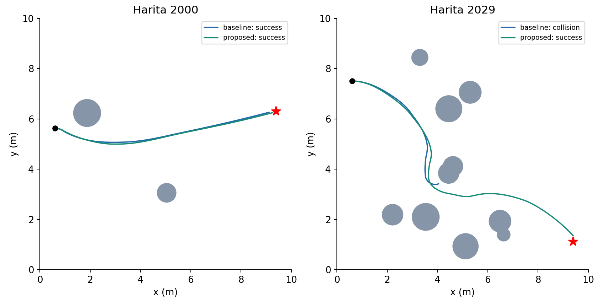
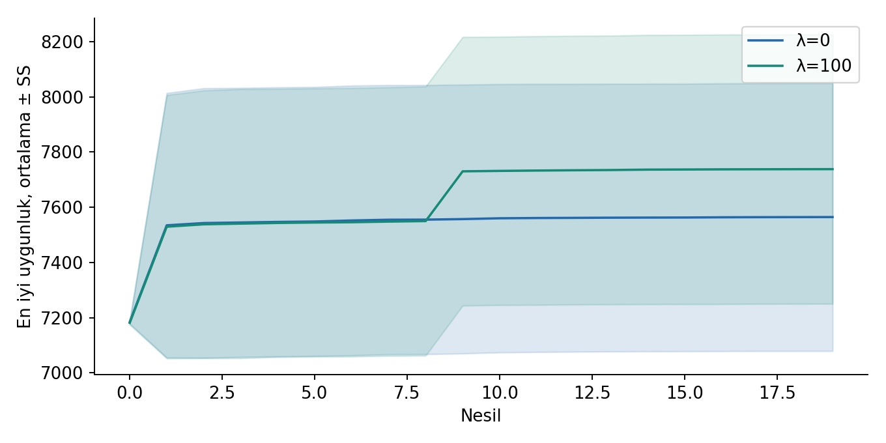
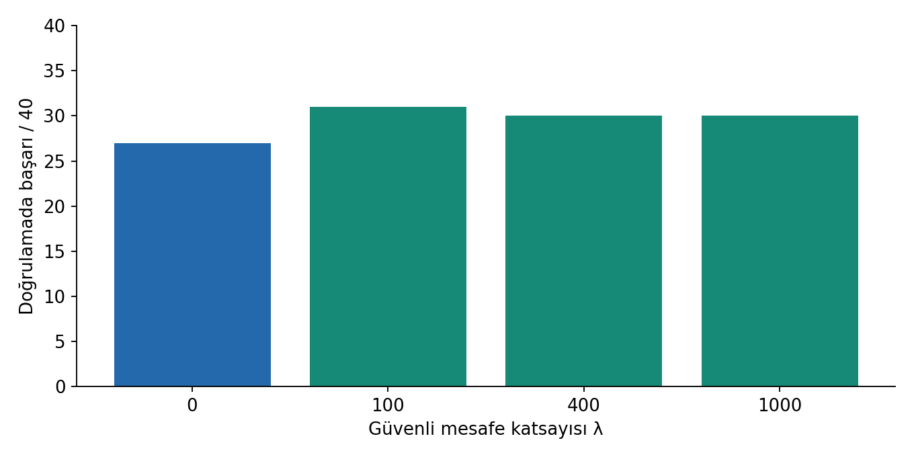
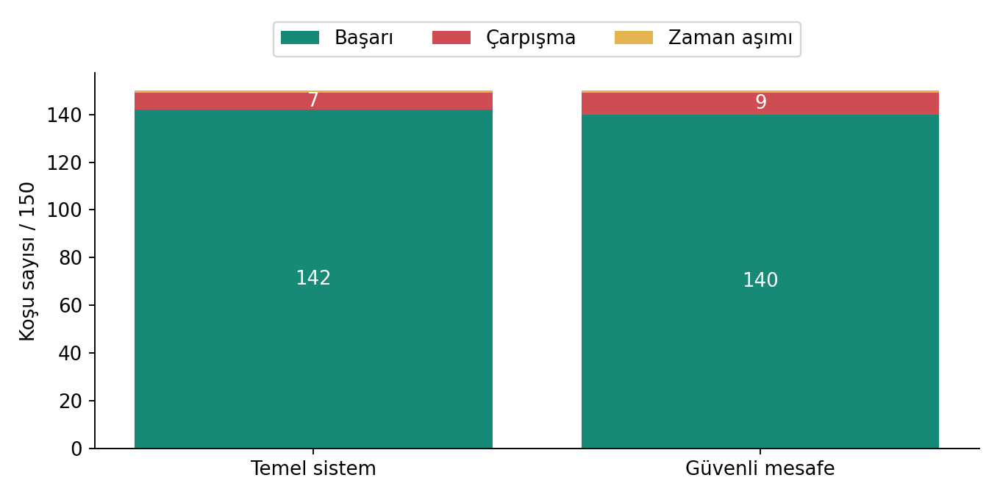
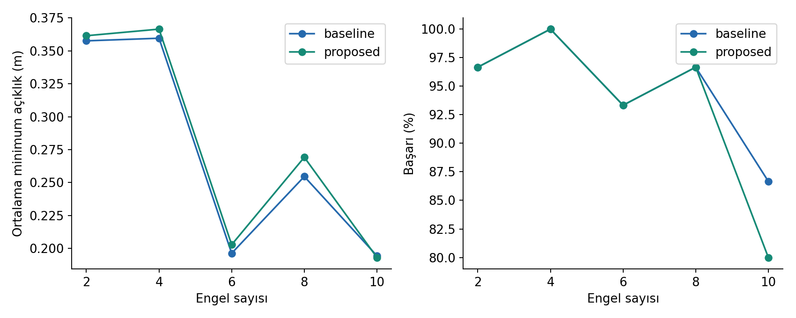

Güvenli mesafe cezasının kontrollü değerlendirmesiEmirhan Efe Demir · 1306230024Makale 16 · 2026
Robot engeller arasında hedefe ulaşmalı.Yakın geçişleri cezalandırmak çarpışmayı azaltıyor mu?Başarı, açıklık, yol ve süre birlikte değerlendirildi.

Zhang [1]: FNN navigasyonu ve GA ağırlık/yol anlatımı.Teng vd. [2]: Güvenlik seviyelerinden GA ağırlıkları.Stavrinidis vd. [3]: GA ile hedef sıralaması, bulanık takip.Bu proje: Tek hedef, öğrenilen çıkış ağırlıkları.
5 normalize girdiGaussian üyelikler80 kuralda minimum etkinlikToplama bölerek normalizasyon160 ağırlıkla iki kontrol çıktısı
μ = exp[-((x-c)/σ)²]αr = min μi ve ᾱr = αr / Σαky = Σ ᾱr wrÇıkışlar: v : [0, 0.8] m/s, ω : [-1, 1] rad/s
Korunan: Katman sırası, min, normalizasyon, ağırlık kromozomu.Tamamlanan: Gaussian ifade, kural sayısı, fizik ve ölçütler.Eksik kaynaklar: Haritalar, ham veri, kesin parametreler.Birebir tekrar gereksinimi kısmen karşılanıyor.
10×10 m dünya, 0.18 m yarıçaplı robot0.2 s adım, 50 s zaman aşımıSüpürülen disk: hareket boyunca çarpışma kontrolüIzgara araması yalnızca haritanın geçilebilirliğini doğrular.
20 birey, 20 nesil, 2 elit4 adaylı turnuva seçilimiKural sınırlarında iki noktalı çaprazlamaAzalan gen mutasyonu, ağırlık sınırı [-1,1]

P = ortalama max(0, (0.6-c)/0.6)²Fλ = F0 - λPYakın geçişleri, çarpışma olmadan da cezalandırır.Değişen tek bileşen bu terimdir.
8 eğitim, 8 doğrulama, 30 test haritası5 bağımsız eğitim tohumuλ adayları: 0, 100, 400, 1000Doğrulama seçimi λ=100; test seçimde kullanılmadı.

Baseline: 142/150 başarı, 7 çarpışmaProposed: 140/150 başarı, 9 çarpışmaHer iki yöntemde 1 zaman aşımıBaşarı artışı veya güvenlik üstünlüğü gözlenmedi.

Ortalama minimum açıklık: 0.2725 → 0.2786 m135 ortak başarıda yol farkı: -0.0347 mBaşarılı alt kümeler farklıysa yol ortalaması yanıltabilir.

Kaynak deneyler birebir doğrulanamadı.Statik engeller, ideal sensörler ve küçük eğitim bütçesi kullanıldı.Güvenlik terimi test çarpışmalarını azaltmadı.Yeni deneyler yeni bir değerlendirme protokolü gerektirir.
python -m src.demoAynı haritada iki modeli karşılaştır.Hedefi değiştir, engel ekle veya sil.Üyelikleri ve en etkin kuralları incele.